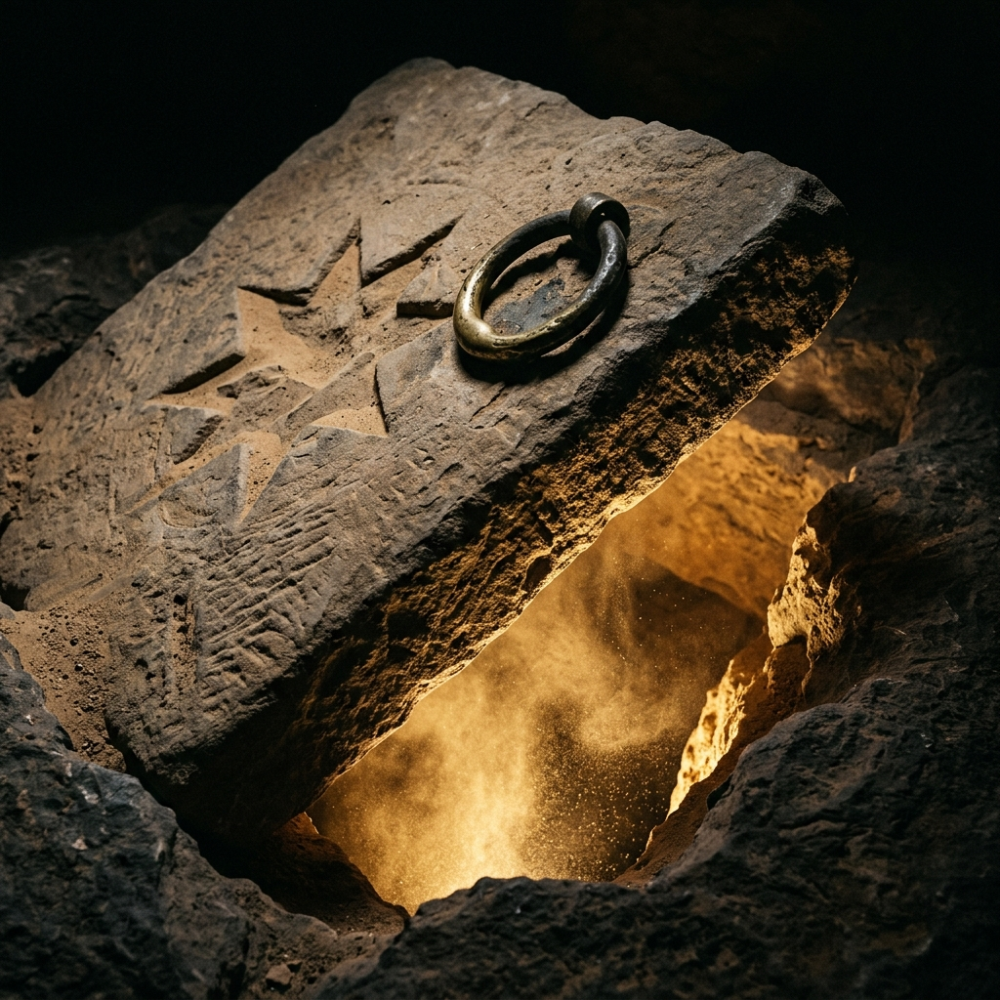

Across projects, one place to direct attention
Aladdin-Cave of Wonders
See which initiative needs you, which effort owns the work, and what can run while you stay free to talk. Your Campaign goals and priorities guide attention; each project steward keeps its own decisions and delivery.
Start with a real example: the Foundry walkthroughs share one approved sequence, while researchPrime, Gandalf, Lamp and this Cave draft each retain their own feedback. The portfolio can suggest where to look; a seat change does not authorize starting work.